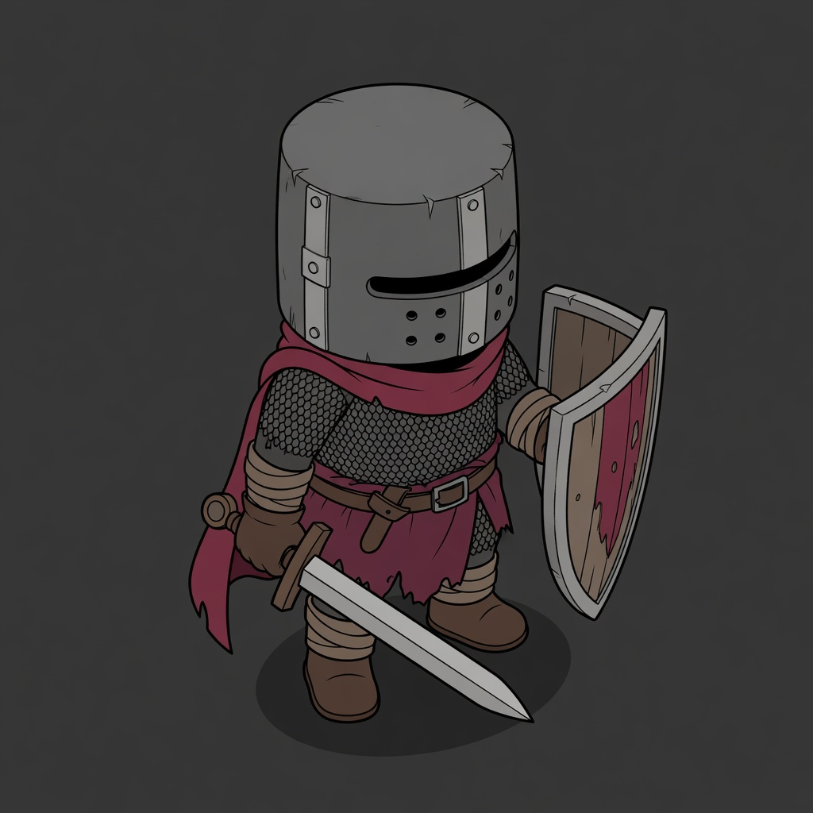

A — Graphic ink and cel shadows
User prefers previous A/B to C, but both read too much as comic-book illustration. Steepen the view by 15 degrees and compare Diablo II-led, Hollow Knight-led and blended game rendering. Keep the cute squat proportions and fixed costume. Revision requested; no full concept approval.